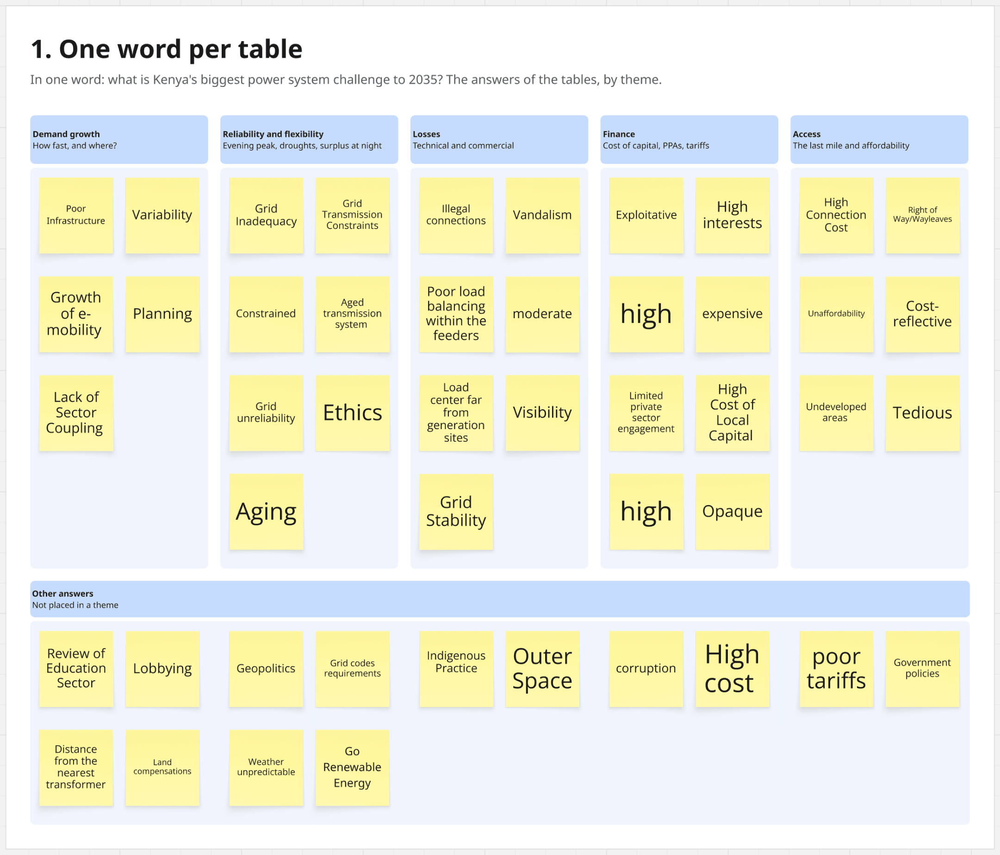

Miro board
The table activities of Day 2 ran on one Miro board, with one laptop per table. The notes keep the participants' own words, with the spelling corrected. The board stays open: link to the board.
1. One word per table
In one word, what is Kenya's biggest power system challenge to 2035?


Enlarge the imageFinance is the largest theme, ahead of reliability and flexibility and of losses. This suggests that the participants see finance and the grid, not generation technology, as the main obstacles to 2035.
2. Which lesson matters most for Kenya?
One thing to copy and one thing to avoid, after the five country lessons.
Green stands for copy and pink for avoid. The colour does not fit every note, because the notes were paired for layout after the workshop. IPP: independent power producer.
The lesson named most often is to plan generation and the grid together, with Germany and Chile as the examples. Seven (7) answers ask for stable policy, auctions or transparent long-term power purchase agreements (PPAs), with Uruguay as the example.
3. Your data for a national model
Which data would your organisation have to supply to such a model, and who owns it?
KenGen: Kenya Electricity Generating Company. KETRACO: Kenya Electricity Transmission Company. EPRA: Energy and Petroleum Regulatory Authority.
A national model depends on data from several institutions. Who shares what, and in which format, is a suitable topic for a follow-up session.
Kenya Power Planning Lab
On Day 1 the room built a generation mix for 2035. The target is 5,560 MW of firm capacity and 31,135 GWh within USD 10 billion. Nine (9) plans arrived on the class board. They are called A to I. All numbers in the lab are rounded and meant for training, not for decisions.
Reserve or budget
Five (5) of the nine plans meet the reserve rule, and all five invest more than the budget of USD 10 billion. The two plans within the budget miss the reserve rule by more than 1,300 MW.
The model stays cheapest
No plan is cheaper per year than the plan of the model (USD 2.58 billion). The closest costs USD 2.65 billion.
The firm value decides
Eight (8) plans build wind and eight (8) build batteries, while the model builds neither. The firm value given to wind, solar and batteries decides the plan.
The nine plans in numbers
Select a column header to sort.
Follow-up: Run the grid for a day
The teams act as the control room for one day. They move the day's hydro water, add a battery of 150 or 300 MW and shift up to 200 MW of evening demand. The reference results for a wet day are about USD 1.11 million with the water spread evenly, about USD 252 thousand with the best operation and about USD 104 thousand with a 300 MW battery. Open the exercise